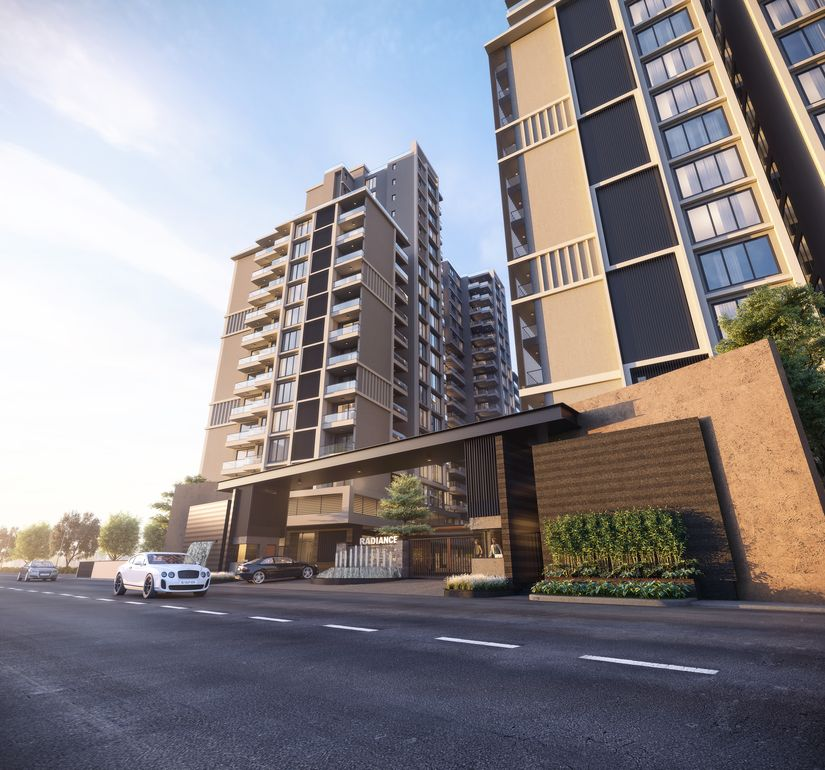

History
Welcome, Antonio Ryanlie

SUNBIC was founded in 1990 in the city of Jakarta, at that time we were just a college with only one major, namely computers. With a good dedication to students, as well as a clear vision and mission, SUNBIC continues to develop until today, we are still giving our best to always develop our university
Due to the large number of applicants with different majors who wanted to join our university, in 2000, we decided to form several new faculties ranging from medicine, design, communication, and literature. The addition of this faculty also gives us the opportunity to expand the area of SUNBIC

SUNBIC continues to try to build new innovations to increase development and progress towards a better direction. In 2005, SUNBIC made a step forward by establishing a cooperative relationship with MIT. This relationship is growing and becomes the basic pioneer in developing strategic cooperation with other top foreign universities.
SUNBIC continues to develop and maintain strategic partnerships with companies engaged in the communication and information technology industry, such as Google, Microsoft, Netflix, Amazon, IBM, and so on. They assist SUNBIC in creating and developing a lecture atmosphere with a technological nuance, supported by research and applied research